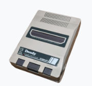
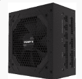

Dendy, або «Денді» - серія ігрових приставок, неофіційний апаратний клон приставки третього покоління Famicom японської компанії Nintendo. Dendy випускалися з кінця 1992 року компанією Steepler, збиралися на Тайвані з китайських комплектуючих на замовлення Steepler та в основному продавалися в оркостані. Згодом приставки серії також почали збирати на китайському заводі Subor та на російському заводі «Тензор» у місті Дубна. В основу приставок були закладені японські конструкції апаратної частини і формат картриджа, дещо відрізняються від американських.
Джойстик (англ. joystick, дослівно «паличка радості») - пристрій введення інформації в персональний комп'ютер, який являє собою вертикальну ручку, що гойдається в двох площинах.

Джерело живлення - це електричний пристрій, який подає електроенергію до електричного навантаження. Основне призначення джерела живлення — перетворювати електричний струм від джерела в правильну напругу, струм і частоту для живлення навантаження. Тому джерела живлення іноді називають перетворювачами електроенергії. Деякі джерела живлення є окремими автономними частинами обладнання, тоді як інші вбудовані в навантажувальні пристрої, які вони живлять. Приклади останнього включають джерела живлення в настільних комп’ютерах і споживчій електроніці. Інші функції, які можуть виконувати джерела живлення, включають обмеження струму, що споживається навантаженням, до безпечного рівня, відключення струму в разі електричної несправності, кондиціювання живлення для запобігання електронному шуму або стрибкам напруги на вході від досягнення навантаження, коригування коефіцієнта та зберігання енергії, щоб вона могла продовжувати живити навантаження у випадку тимчасового переривання живлення джерела (джерело безперебійного живлення).
